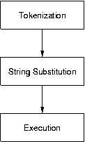

<command name> <argument 1> <argument 2> <argument 3> <...>
Basically, we have a word, followed by more words called arguments.
Each word is separated by one or more spaces. The first word is ALWAYS
the command name (this is not always the case in many other languages,
such as C). Here are some examples:
Now for the explanation of tokenization: Both the command
name and the arguments in a TCL command are known as "tokens". Tokens
are important because most commands expect a specific number of tokens
(or a certain token format). This will be explored further in the
next section...
Note: The word "token" is sometimes refered to by TCL documents as as a "word".
> set name Matt
Matt
> puts $name
Matt
In this example the $name variable was substituted with "Matt" therefore
presenting the token/execute part of TCL with "puts Matt"
> set p putsIn this example $p was replaced with "puts" and $m was replaced with "Hello". This passed "puts Hello" to the token/execute portion of TCL.
puts
> set m Hello
> $p $m
Hello
> set message I .... anchoviesTCL did not like what we did here. Specifically, "set" requires 2 additional tokens for varname and value, we provide 4. The use of "" gives the "set" command what it wants:
wrong # args: should be "set varName ?newValue?"
> set message "I .... anchovies"Now the "set" command is happy... Note how the actual quotes themselves are not a part of the new expression. Now we will show that the string inside of the "" is still open for substitution:
I .... anchovies
> set ps paste
paste
> set sw sweet
sweet
> set r red
red
> set b blue
blue
> puts " roses are $r \n violets are $b \n $ps is $sw \n but don't eat the glue"
roses are red
violets are blue
paste is sweet
but don't eat the glue
Note the multiple substitution and the use of \n for newlines.
What if the situation comes up where you want to use a " in your string?
Like C, TCL uses \ to allow this to happen:
> puts "hello"*Question: Is it possible to define a variable that contains spaces?
hello
> puts "Ivan said \"hello\""
Ivan said "hello"
*Question: What will this do?
Why?
> set cmd "puts hello"
> $cmd
> set message {I .... anchovies}No change here, the "" example did no substitution anyway. Like the "", the {} are filtered out... Here we are identical to the "" case
I .... anchovies
> set ps pasteNote that nothing was substituted above, everything was taken as-is. Here we see the fundamental difference between "" and {}.
paste
> set sw sweet
sweet
> set r red
red
> set b blue
blue
> puts { roses are $r \n violets are $b \n $ps is $sw \n but don't eat the glue}
roses are $r \n violets are $b \n $ps is $sw \n but don't eat the glue
> puts "hello"Again, no substitution occurs between the braces. Therefore the \ stay (i.e., we don't need to use them).
hello
> puts {Ivan said \"hello\"}
Ivan said \"hello\"
Is this property useful? As it turns out, this property is fundamental in how TCL operates. Specifically, the {} provide an excellent tool for conditional functions (i.e. if) and loops (i.e. for, while) to specify code segments. This is explored further in the next module.
**Question: Why is {} useful when
defining code segments?
proc circle_calc {r} {Notice the use of [] here. Specifically the use of these symbols in the "set" command allow the "expr" statements to be executed as a separate command. Now we see the same function implemented a different way:
set pi 3.14159
set d [expr 2*$r]
set cir [expr $pi*2*$r]
set area [expr pow([expr $pi*$r],2)]return "d = $d, cir = $cir, area = $area"
}
proc circle_calc2 {r} {
set pi 3.14159
return "d = [expr 2*$r], cir = [expr $pi*2*$r], area = [expr pow([expr $pi*$r],2)]"
}
Here we allow the substitutions to occur directly within our return
string. In TCL, [] form the basis of a "function call" in that it
allows subcommands to be executed and substituted prior to the execution
of the current string. Question 1:
What would happen in we used braces in place of quotes in the code above?
*Question
2: What would happen if we used quotes in place of braces
in the code above?
> puts aCould be stated as:
> puts b
> puts c
> puts a; puts b; puts c
> expr 1+2+3+4+5Is the same as:
> expr 1+\Another way to extend a line is to leave an unmatched " or { or [. TCL will wait for you to close these structures before evalutating the command.
2+3+\
4+5
#this is a commentIn order for a line to be a comment, # must be the first character of the "command"
puts "hello"
#this is a comment
set i 6 #this will not work
set i 6 ;# Using a semicolon works, though